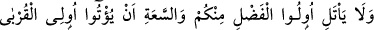
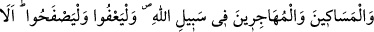
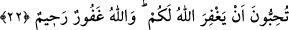
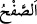

kişi sevdiğine: ‘Dilediğini yap!’ der.
el-Mekâsıdü’l-hasene’de der ki: Müsâmahalı yahut gevşek davranana: “Sanki sen
Bedir ehlindensin!” denir.”
Her bir günahtan tevbenin kabûlü kendisinden istenecek olan yalnızca Allah’tır.
22. İçinizden fazîletli ve servet sâhibi kimseler akrabaya, yoksullara, Allah
yolunda göç edenlere (mallarından) vermeyeceklerine yemin etmesinler;
bağışlasınlar; feragat göstersinler. Allah’ın sizi bağışlamasını arzulamaz mısınız?
Allah çok bağışlayandır, çok merhametlidir.
Bu âyet, Hz. Âişe’ye iftirâ edenler arasında bulunan Mistah’a öteden beri yapmakta
olduğu yardımı kesmeye yemin eden Hz. Ebûbekir Sıddîk (r.a.) hakkında inmiştir.
Mistah, Mekke’den Medine’ye hicret etmiş ve Bedir savaşına katılmış fakir bir kimse
idi. Ebûbekir (r.a.)’in teyzesinin oğluydu. Ebûbekir (r.a.) ona sürekli yardımda
bulunurdu.
“İçinizden fazîletli” dinde fazîlet “ve servet sâhibi” malda eli geniş “kimseler
akrabaya, yoksullara, Allah yolunda göç edenlere” sayılan bu sıfatlar bir mevsûfa
âiddir. ‘Bu sıfatları taşıyan kimselere’ demektir. Çünkü söz böyle olan kimseler
hakkındadır. Mistah da Hz. Ebûbekir’in yakını, yoksul ve muhâcirdir. Bu sıfatların
birbirine atfedilerek getirilmesi, bunlardan her birine sâhip olan kimsenin yardım
edilmeye müstehak olduğunu belirtmek içindir.
“(Mallarından) vermeyeceklerine yemin etmesinler;” işledikleri günahtan dolayı
onları “bağışlasınlar; ferâgat göstersinler” yâni onları kınamaktan vazgeçsinler.
Râgıb demiştir ki: “
”, kınamayı ve azarlamayı terk etmektir. Aftan daha ileridir.
İnsan bazen affeder, ama suçluyu kınamaktan kendini alamaz.”
Affetmeniz, kınamamanız ve size kötülük edene iyilik etmeniz karşılığında “Allah’ın
sizi bağışlamasını arzulamaz mısınız? Allah çok bağışlayandır, çok merhametlidir.”
Allah hesâba çekip cezâlandırmaya güç ve kudret sâhibi olduğu, kulları da bunu
gerektirecek çokça günah işledikleri halde yüce Allah çok bağışlayandır, çok
merhametlidir.
Burada affetmeye çokça teşvik ve affetmek karşılığında cömertçe mükâfatlar vaad
edilmektedir. Sanki şöyle denilmiştir: ‘Allah’ın sizi affetmesini arzu etmez misiniz?’
İşte suçluları bağışlamanız bunun gereklerinden biridir.
Rivâyet olunduğuna göre Rasûlullah (s.a.) bu âyeti Hz. Ebûbekir (r.a.)’a okuyunca o:
“Evet, Allah’ın beni affetmesini isterim.” dedi ve Mistah’a tekrar yardımda bulunmaya